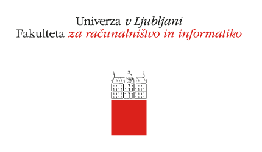

Licenca
To delo je na voljo pod pogoji slovenske licence Creative Commons 2.5:
priznanje avtorstva - nekomercialno - deljenje pod enakimi pogoji.
Celotna licenca je na voljo na spletu na naslovu http://creativecommons.org/licenses/by-nc-sa/2.5/si/. V skladu s to licenco je dovoljeno vsakemu uporabniku delo razmnoževati, distribuirati, javno priobčevati, dajati v najem in tudi predelovati, vendar samo v nekomercialne namene in ob pogoju, da navede avtorja oziroma avtorje in izdajatelja tega dela. Če uporabnik delo predela, kar pomeni, da ga spremeni, preoblikuje, prevede ali uporabi to delo v svojem delu, lahko predelavo dela ponudi na voljo le pod pogoji, ki so enaki pogojem iz te licence oziroma pod enako licenco.

SLIKOVNO PROGRAMIRANJE
E-učbenik za uvod v programiranje
Avtorji:
Gregor Anželj,dr. Janez Brank, dr. Andrej Brodnik, dr. Luka Fürst, mag. Matija Lokar
Urednik:dr. Andrej Brodnik
Slikovno gradivo:
Gregor Anželj, Andrej Brodnik, Devin Cook, Flickr, Luka Fürst, Joseph Gill, Google Developers, Thomas Karp, Pixabay, PublicDomainPictures, Python Software Foundation, Nota Razi, Sara, Wikimedia, Wikipedia
Strokovni pregled:dr. Matej Črepinšek, Romana Zver
Konzulentski pregled: Radovan Krajnc
Jezikovni pregled: Lenart Jerabek
Oblikovanje vmesnika: Gregor Anželj
Oblikovanje naslovnice: Gregor Anželj
Priprava interaktivnosti: Gregor Anželj
http://lusy.fri.uni-lj.si/ucbenik/
E-učbenik za uvod v programiranje
Avtorji:
Gregor Anželj,
Urednik:
Slikovno gradivo:
Gregor Anželj, Andrej Brodnik, Devin Cook, Flickr, Luka Fürst, Joseph Gill, Google Developers, Thomas Karp, Pixabay, PublicDomainPictures, Python Software Foundation, Nota Razi, Sara, Wikimedia, Wikipedia
Strokovni pregled:
Konzulentski pregled: Radovan Krajnc
Jezikovni pregled: Lenart Jerabek
Oblikovanje vmesnika: Gregor Anželj
Oblikovanje naslovnice: Gregor Anželj
Priprava interaktivnosti: Gregor Anželj
http://lusy.fri.uni-lj.si/ucbenik/
Izdale in založile:
Založba Fakultete za računalništvo in informatiko,
Univerza v Ljubljani,
Večna pot 113, SI-1000 Ljubljana (zanjo:
Glavni urednik in vodja založbe:
Ljubljana, 2018
Fakulteta za elektrotehniko, računalništvo in informatiko,
Univerza v Mariboru (izdajatelj),
Koroška cesta 46, SI-2000 Maribor (zanjo:
Glavni urednik:
Univerzitetna založba Univerze v Mariboru (založnik)
Vodja založbe:
Maribor, 2018
